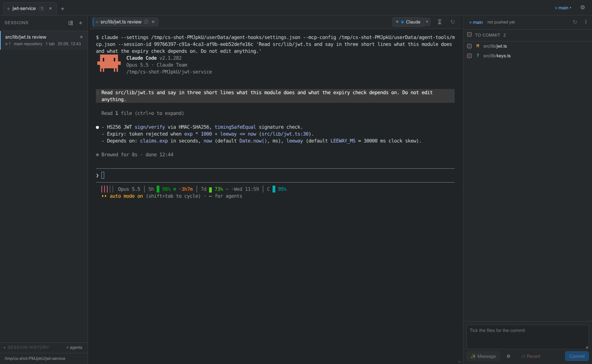
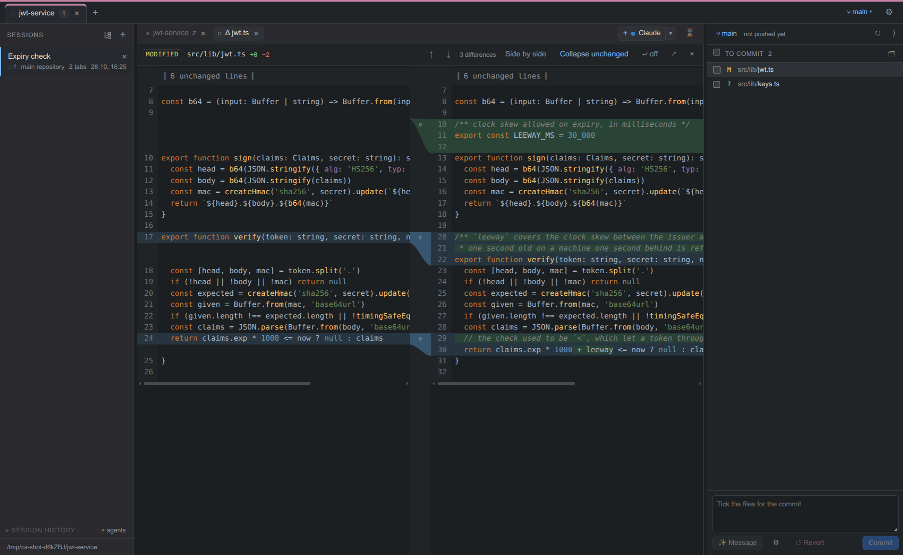

A desktop app for parallel agent work: projects in tabs, a branch and a worktree per session, the real CLIs in terminals, and diffs, commits and merges in the same window.

An agent at work in its own session, with the task it was started with.
Every session is a git branch in its own worktree. Inside it, as many agents, shells, files and diffs as the task needs.
A session gets a branch off the base you pick and a directory of its own. Agents in different sessions never touch each other's files.
Each Claude tab gets its own session id, Codex reports its thread. Two agents in one directory never resume each other.
Working, waiting for you, idle, asleep: taken from Claude Code's hooks, not guessed from output. A notification and a sound when an agent needs you.
A Claude tab gets an open_session tool: a visible session with a worktree, a branch and a first task. Agents hand work to each other.
An idle agent is stopped after N minutes and keeps its conversation. One click resumes it where it left off.
All Claude and Codex conversations of the project, including ones started outside the app, with full-text search inside what was said.
A side-by-side diff in the style of JetBrains IDEs, next to the list of changed files.
gh.
Claude Code and Codex run as they are, in xterm.js terminals. Your settings, profiles and subscriptions stay yours. Add any other CLI as a preset.
Projects, sessions and tabs are restored after a restart, written atomically with backups.
Both follow the system until you choose. git terms are never translated.
There are no release binaries yet: build from source.
X11 or Wayland. Developed on Ubuntu 24.04 with KDE Plasma.
gh for the PR button.
On PATH. The app starts them, it does not bundle them.
git clone https://github.com/VladyslavAtom/claude-studio
cd claude-studio
npm install
npm run rebuild # node-pty against the Electron ABI
./claude-studio.sh # build if needed and start; --help for the rest
npm run dist # or an AppImage in release/Ubuntu 24.04+ restricts unprivileged user namespaces through AppArmor, so the scripts set ELECTRON_DISABLE_SANDBOX=1.
Status: 0.1.0. A personal tool, published in case it is useful: one developer, one Linux desktop. macOS has never been run, there is no Windows build. Issues and patches are welcome on GitHub.